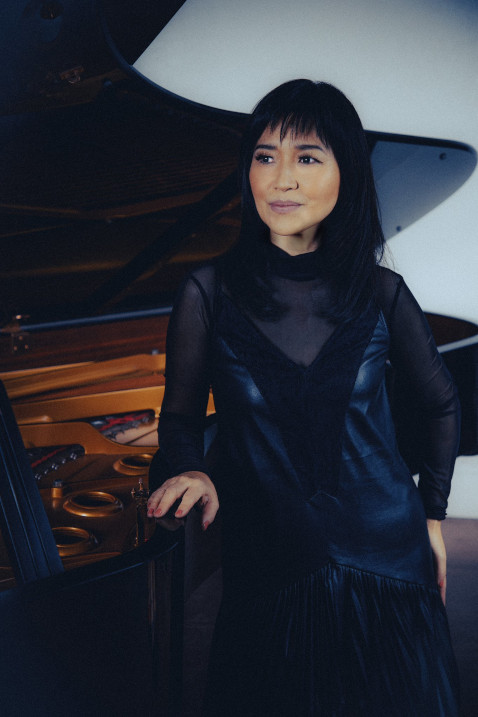

For the local band from California, This is very good EP. Before you can only hear this songs live, so i will waiting for this album, and i take only good feelings from this 3 songs. I think, every should try listen to this Alternative Rock album, with Shoegaze elements. Let's give support to them! This band have a real perspective in future, to become not just a local band.
I hear it for first time, but i want give it 5/5. It's noise rock/shoegaze/alternative with elements of ambient, and this sounds so great. All this synthisizers, guitars, drums - all on the right place. I can make some associations with LukHash - "Digital Memories", and My Bloody Valentine - "Loveless", because it's have progression in sound like this two. I think, Yakui become one of my favorite noise rockers of my life so fast. This ganre called Maidcore.
Today is rainy and dark day, so I think it's a perfect moment to relisten one of the most popular Alternative Rock albums of 2000's. I can only said, that listening to all this choirs and piano, guitar riffs, and Amy Lee's vocal - you feel how epic is it. Every song is unique and absolutley not boring. This 10 songs (11, if include "Band version" of My Immortal) you listen easy and fast. It's my favorite Gothic album of all, that i ever listen. If you have a free hour, you can listen it for free on Bandcamp.
I think, every an of this band waiting for this so much. I think, i shouldn't say, how legendary this album is, so let's talk about it's remake. This version opens a new side of Meteora - ambient. Yes, almost all of demos, that don't being released under Linkin Park Underground before - it's ambient or just soft non-vocals music. If you never listen to Linkin Park Underground, you can start with demo's from this album. I recomment first of all try Figure.09 (2002 Demo). Yes, it's not so big review, like Keiko Matsui's "Euphoria", it's just a good bonus for LP fans.
After 4 years of silance - keyboardist Keiko release a new album, called "Euphoria". I think, that maybe it's the most Jazz album of all she's discography, other works have elements or domination of New Age and Ambient sound. Is album, like he's name give you feeling of euphoria? I think - yes! Scince January i take a lot of stress, so this album help me to go deep inside myself, and found a hope for better future. She's still that Kieko, that we are all love, and she's 60 years old now. Honestly, i think it's really unbelivable, that all she's life - it's music. She's usually being in Russia, and respect to it, but i never hear she's live performances for real, but want it so much... the only thing - that i can said - that you should listen to this album if you're fan of Jazz, or just give a little chance, if you rare listen to this ganre. If you want to listen the peak of Keiko Matsui career - listen to The Piano (2003), and Deep Blue (2001) albums. You also can just listen to The Piano version of "Trees" and Deep Blue's "To The Indian Sea".
Maybe, it's the most important album for me, it's help me in hard time of 2020 and 2021 for myself, and in 2022 it's album actual for all of us, one of the way to understand this album - it's album about nuclear war, that ends with acoustic song, called "The Messanger", a cool way to show world after this catastrophe. For me it's classic, and i think, that this album cool the same, as Meteora and Hybrid Theory, but take a lot of hate from fans of classic Linkin Park, and i think, it's stupid, because changing style with new album - it's idea of band, and i don't want to see band, that after 25 years do the same music, as in debut album, i want to see progression of band with time, and their fans. So, if you don't hear this album, and my opinion not useless for you, i recommend you this!
It's time to talk about my favorite pop-music album, it's not just my favorite, but it's also one of the first music, that i ever hear, the first - it's The Rasmus. I can't said, that this album for me perfect, and the most problem, it's that we see, how much money being invested in this album, it's bad because of it's legenday album, and just look at the tracklist, you are see a lot of popular artists on DEBUT ALBUM, musical videos also strange in some parts, almost all musical videos have a lot of men's, that being aroud Lady GaGa. So, let's talk about good - no one pop-album, and albums at all don't give me that feelings, that give this, it's unique feelings, and every time, that i re-listen it, i feel yourself happier, i also want to take some samples from this album to make my own music in future. I think, that i should buy it for my CD-collection, when i have possability to buy it. My favorite song and musical video: Just Dance. It's the only GaGa album, that i like, all other is just not interesting to me. Maybe, album reissue (The Fame Monster) also good in some parts, but original The Fame and it's album cover anyway better for me.
I love Beck, he is like my motivation to play guitar, i like he's music, and that album it's something awesome, like "Sea Change", another album, if you got free time, please, give this album chance.
What can be better, if not strength girls with guns that ride motorcycles? :D
For OVA it's a good detective, so i enjoy it so much, and want to try read manga or watch TV show of this franchise.
Watch this - it's a lose of time. You understand nothing from 12 episodes, and last episode don't give you any answers to questions, and we are have a long oppening, that become annoying from second-third episode. My recommendation - don't start to watch, to don't felt, that you lose something. If you want action, guns, explotions, and crime - watch Black Lagoon instead.
I can't said, that this anime - masterpice, but it's not bad, it's telling about Japan in XVI B.C, and i like, how life in that Medival time, but the ony bad time, it's that war's and revolution's being usual, and anime about this, character's is don't open's as person's after 1 hour and 18 minuites, but maybe, it's too short, to do this, but sometimes i see movies/cartoon's, where i felt happiness or weakness of character's on that short time, but you can watch this, it's not new anime, and not so popular. personally, i like this, and maybe, if i have possability, i buy it to my DVD collection in future.
It's one of the best art, that i ever seen, every episode being for me so interesting, it's story don't hard to understand, but it's so huge (in this situation it's good). While i watch first part of this anime, i every time remember Black Lagoon, and Uryuu Minene (Number 9) is similar to me for Revy from Black Lagoon, but maybe it's just for me... And... That's anime got 5 from me, it's beautiful, and it's give me some interesting thought's for myself.
Huh, that's very funny anime, it's made my day. :D. I recommend you try to watch first episode, episodes here is 12 minutes length, very short for anime, i long time can't find something really funny, that not being old, like "Night at the Museum", the main character, Yoshiko is so cute and funny :3 (she love banana's, and i too). BANANA!!!! üçåüçåüçå
I think, it's a really great work, that Stephen Hilenburg make before leave production of Spongebob Squarepants. This cartoon 1.5 hour lenght, but you felt very different emotions, from laugh, to crying, and that's awersome, how they (Nickelodeon) make that effect, it's felt like being main characters, while watch it. Awersome work, that changed me.
It's more like recommendation, than review, but it think this is one of the most beautiful movies i've ever seen. It's just one of the funniest not-surrealitic comedy films. It's that rare case, when thing that i've meet recently become one of my favorite in a short time period.
If you like comedy's and rock - it's movie for you :D. For me, this seems to The Blues Brothers, but it's don't trying to copy it. It's film about 4 guy's, that trying to get on the Kiss live performance, but they are take a lot chellanges to get on it. If you don't know, what to watch, but you want something, this movie is for you.
A cool film, that sadly, but take a bad ratings, i just don't found reasons for this, this movie have not bad story, it's also Ice Cube as main character, that cool, i'm not listen them to usually, but i like he's collab with Korn, called "Children of the Korn".